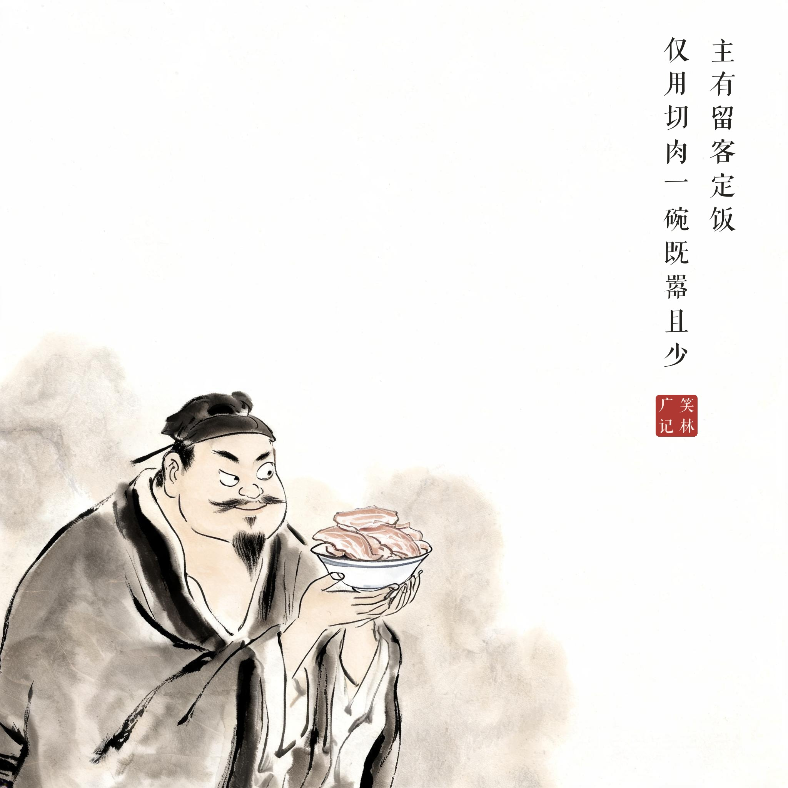
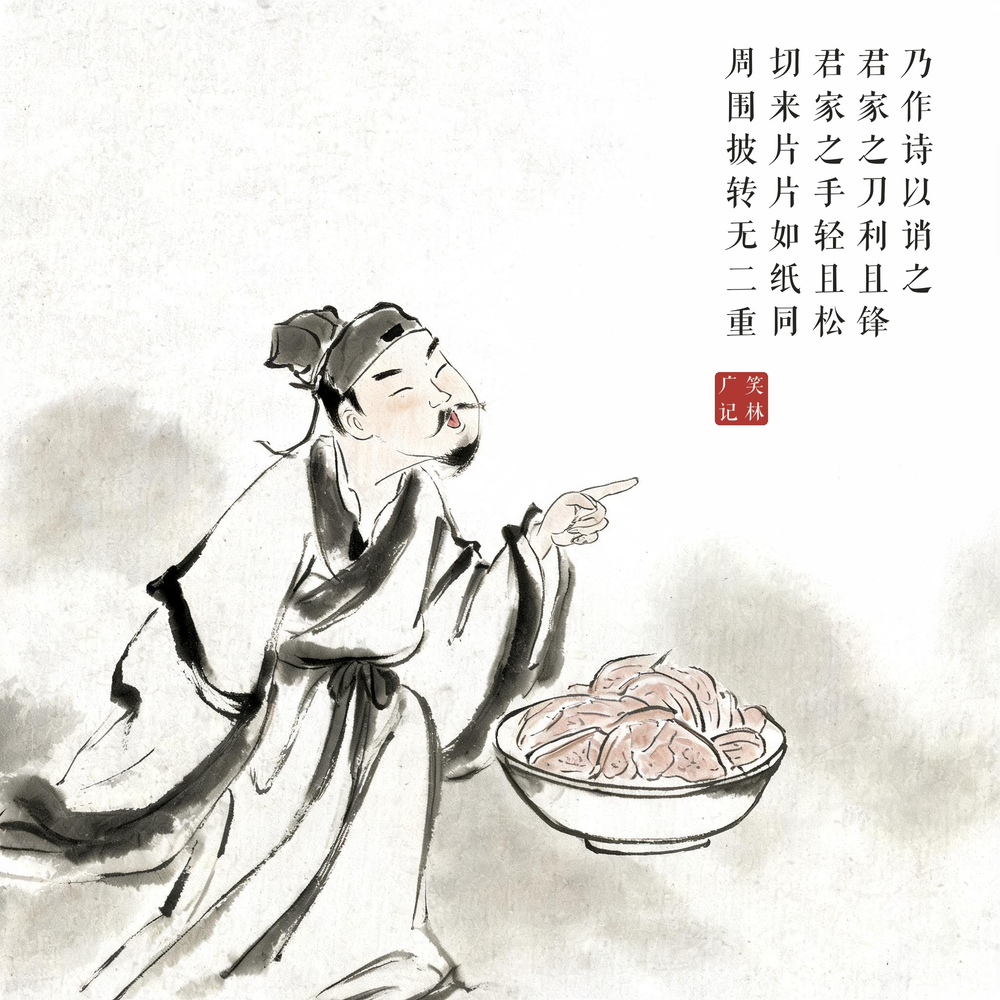
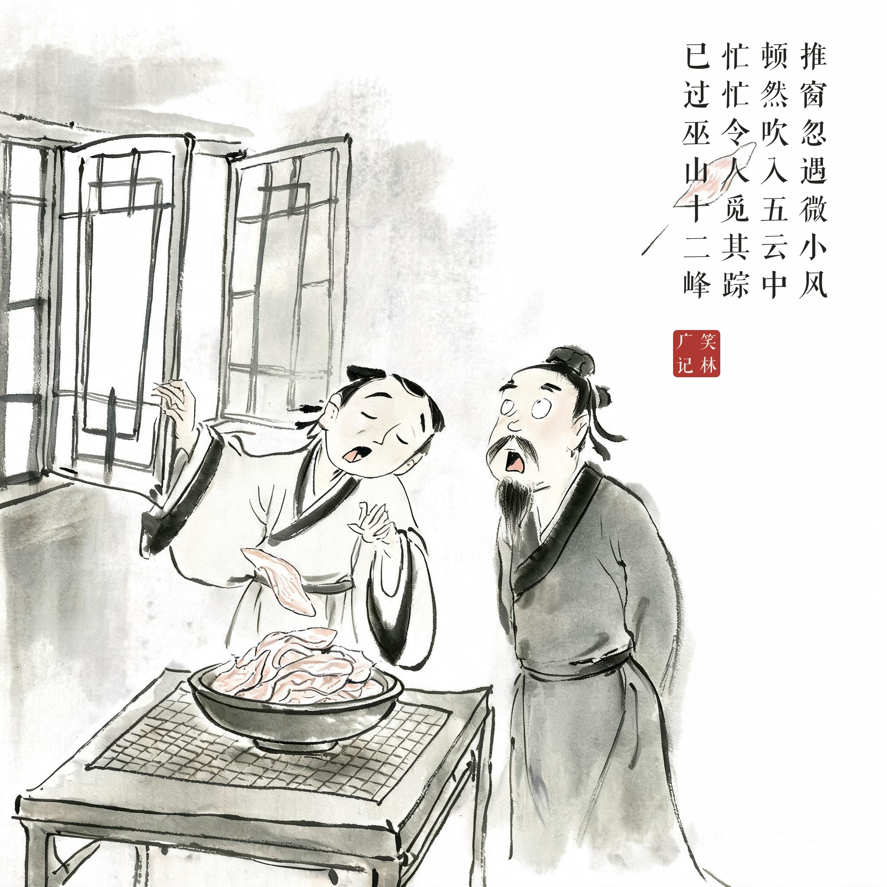

《笑林广记 · 闺风部》（[清]游戏主人纂集）
主有留客定饭，仅用切肉一碗，既嚣且少。乃作诗以诮之，曰："君家之刀利且锋，君家之手轻且松。切来片片如纸同，周围披转无二重。推窗忽遇微小风，顿然吹入五云中。忙忙令人觅其踪，已过巫山十二峰。"
主人留客吃饭，只端出一碗切肉，摆盘倒很张扬。客人作了一首诗挖苦他："你家的刀又快又锋，你家的手又轻又松。切出来的肉片跟纸一样，盘子里都叠不起重来。推窗忽然遇到一阵微风——肉片顿时飘进了五云之中。连忙让人去找它的踪影，已经飞过了巫山十二峰！"
用七言律诗骂吝啬是最高级的报复——"切来片片如纸同"，薄到被风吹过巫山十二峰，全诗不带一个"吝"字，但比一百个"小气"都狠。